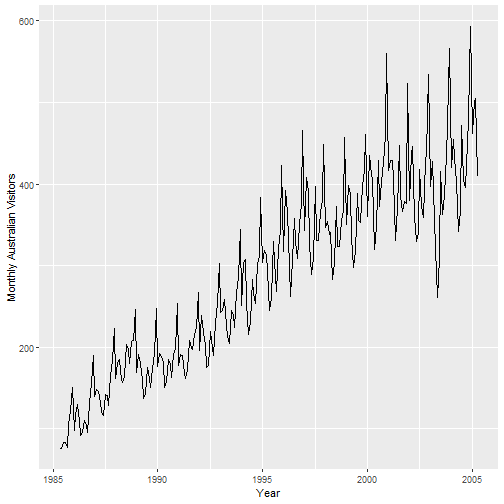

tail(visitors)
## Jan Feb Mar Apr May Jun Jul Aug Sep Oct Nov Dec ## 2004 479.9 593.1 ## 2005 462.4 501.6 504.7 409.5
autoplot(visitors) + xlab("Year") + ylab("Monthly Australian Visitors")

# ACF & PACF plots tsdisplay(visitors, main = "Monthly Australian Visitors")